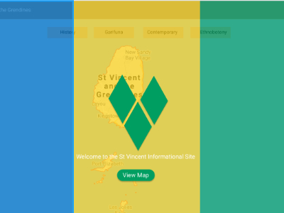
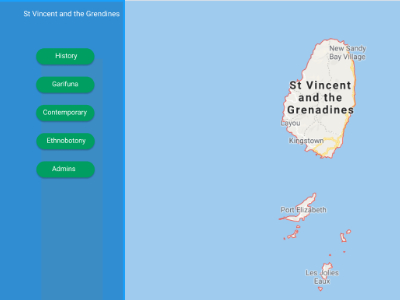
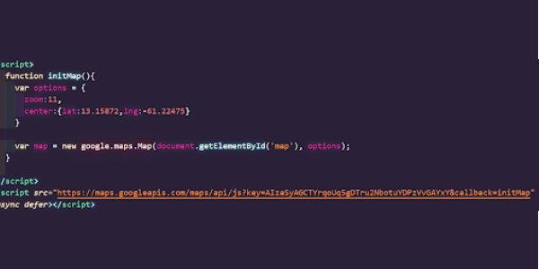
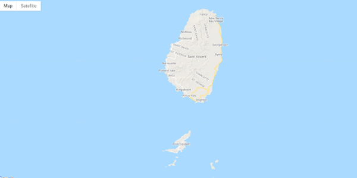

From the initial Designs I was given, I used Figma to create a prototype on how the site would be navigated as there were many aspects of the site to build up.
 For this project, the map was the most important part and was the first thing I thought about. I used the google maps API as it had the most potential to connect it up and worked well. It also allowed me to add custom map markers which were vital for the site as one of the core functions of the site is to show users about the history of St Vincent and the grenadines.
 I wanted to make the site easy to navigate for users but not obstruct the view of the main map and markers so I went with a nav bar that could be both opened and closed for times when the user has no need for it.